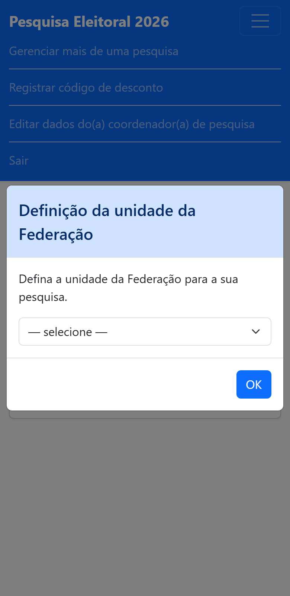
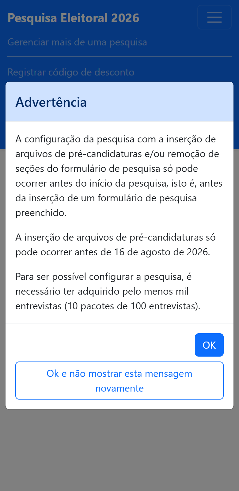

Parte 3 — Modo de operação
4. Entrar em operação
O modo de operação é o uso real do aplicativo — é aqui que a sua pesquisa acontece de verdade. Ao entrar em operação pela primeira vez, o aplicativo apresenta os Termos de Uso e pede duas definições importantes.
4.1 Termos e Condições de Uso
Antes de operar, você aceita os Termos e Condições de Uso do aplicativo de pesquisa eleitoral. O texto completo está na §15; ao longo deste guia, cada regra aparece na página da função a que se refere. Em resumo, os Termos tratam de:
- Responsabilidades perante a Justiça Eleitoral (§7 e §12 deste guia);
- Dados pessoais — o app não registra dados que identifiquem entrevistados (§1 e §8);
- Modalidades espontânea e estimulada (§11);
- Etapas e datas do período eleitoral de 2026 (§10, §12 e §14);
- Vinculação a uma Unidade da Federação (abaixo);
- Exigências para funções avançadas — múltiplas pesquisas, segmentação e alteração do questionário (§6, §7, §10 e §13);
- Intransferibilidade das entrevistas entre pesquisas (§6 e §7);
- Propriedade intelectual do aplicativo.
4.2 Definir a Unidade da Federação (UF)
Toda pesquisa precisa estar vinculada a uma UF. Por isso, antes da tela de boas-vindas, o aplicativo mostra a janela Definição da unidade da Federação:

- Escolha a UF da sua pesquisa na lista.
- Toque em OK.
4.3 Advertência de configuração
Uma vez por acesso, o aplicativo mostra uma Advertência lembrando as regras da configuração do questionário:

- A configuração (inserir pré-candidaturas e/ou remover seções) só pode ocorrer ANTES do início da pesquisa (antes da 1ª entrevista enviada);
- a inserção de pré-candidaturas só pode ocorrer antes de 16 de agosto de 2026;
- é necessário ter adquirido pelo menos mil entrevistas (10 pacotes de 100).
Toque em OK para seguir, ou em Ok e não mostrar esta mensagem novamente para não vê-la de novo nesta sessão.
Definida a UF e vista a advertência, você chega à tela de boas-vindas. Continue em §5.